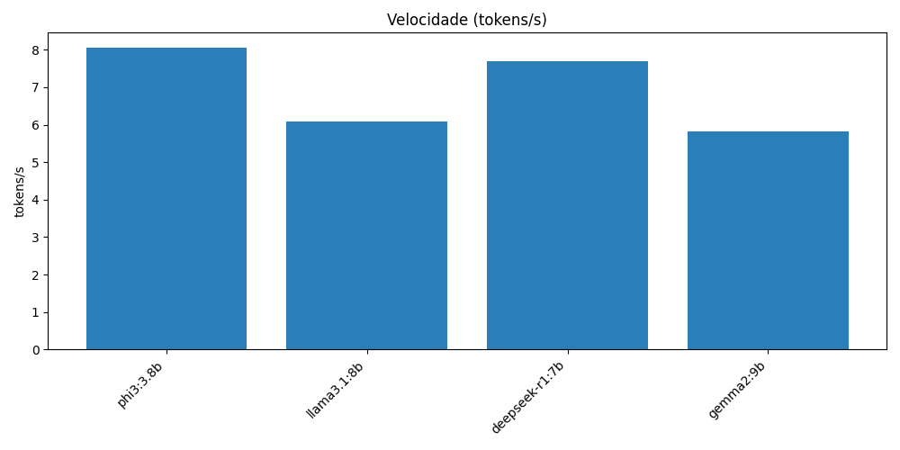
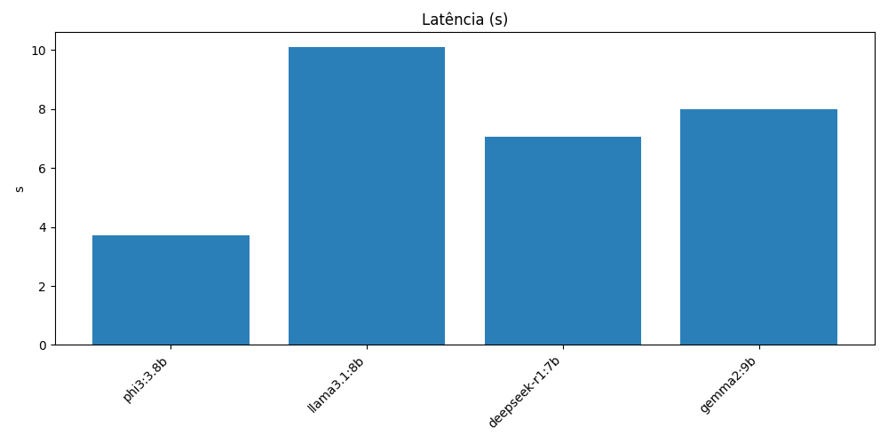
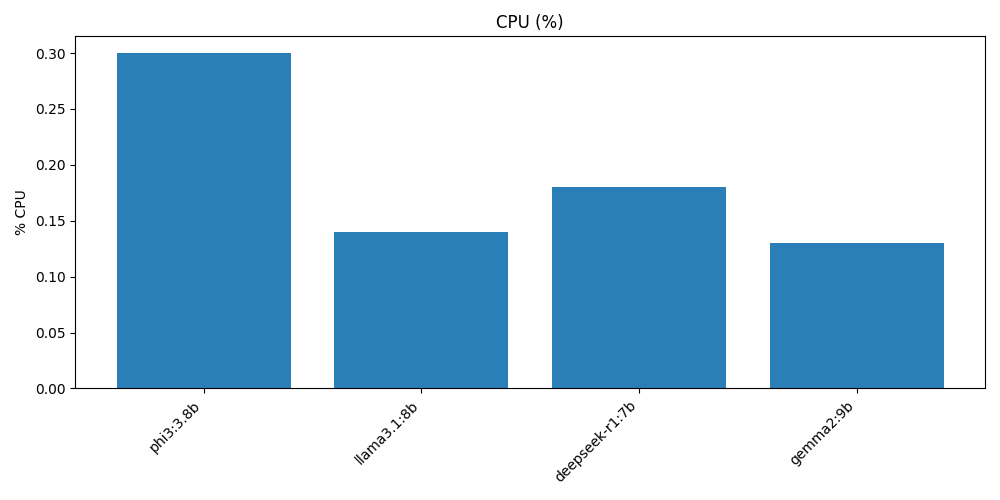
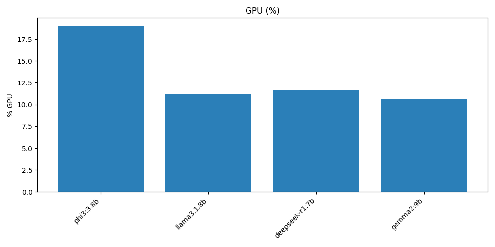
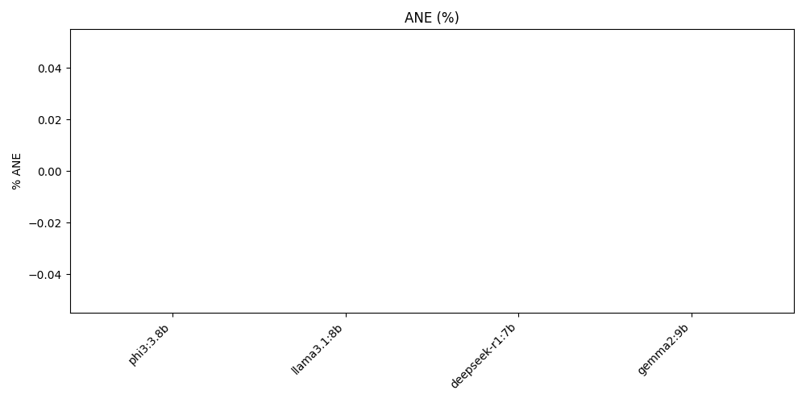

Relatório Final — Benchmark Ollama (MacBook M4)
📌 Tabela de Resultados
| model |
latency_sec |
total_time_sec |
tokens |
tokens_per_sec |
cpu_percent |
gpu_percent |
ane_percent |
| phi3:3.8b |
3.726 |
688.279 |
5539 |
8.05 |
0.30 |
18.97 |
0.0 |
| llama3.1:8b |
10.102 |
77.236 |
470 |
6.09 |
0.14 |
11.25 |
0.0 |
| deepseek-r1:7b |
7.069 |
158.569 |
1221 |
7.70 |
0.18 |
11.68 |
0.0 |
| gemma2:9b |
8.010 |
75.799 |
441 |
5.82 |
0.13 |
10.59 |
0.0 |
🏆 Destaques
- Mais rápido (tokens/s): phi3:3.8b
- Menor latência: phi3:3.8b
- Melhor precisão (aprox.): phi3:3.8b
- Melhor custo-benefício (menor CPU): gemma2:9b
📈 Gráficos
Velocidade

Latência

Uso médio da CPU (%)

Uso médio da GPU (%)

Uso médio da ANE (%)
